MyBatis-Plus（简称 MP）是一个 MyBatis 的增强工具，在 MyBatis 的基础上只做增强不做改变，为简化开发、提高效率而生。
这个项目是国人开发的，降低了上手门槛这点十分好评
官网：https://baomidou.com/ | https://mybatis.plus/
零、准备工作 在普通的java项目中使用，导入依赖即可：
1 2 3 4 5 <dependency > <groupId > com.baomidou</groupId > <artifactId > mybatis-plus</artifactId > <version > 3.3.2</version > </dependency >
对于springboot项目：
1 2 3 4 5 <dependency > <groupId > com.baomidou</groupId > <artifactId > mybatis-plus-boot-starter</artifactId > <version > 3.3.2</version > </dependency >
按照快速开始 的说明，将表和数据创建好。然后使用Spring Initializr创建springboot项目，所有依赖如下
1 2 3 4 5 6 7 8 9 10 11 12 13 14 15 16 17 18 19 20 21 22 23 24 25 26 27 28 29 30 31 32 33 34 35 36 37 38 39 <dependencies > <dependency > <groupId > org.springframework.boot</groupId > <artifactId > spring-boot-starter</artifactId > </dependency > <dependency > <groupId > mysql</groupId > <artifactId > mysql-connector-java</artifactId > <version > 5.1.49</version > </dependency > <dependency > <groupId > com.baomidou</groupId > <artifactId > mybatis-plus-boot-starter</artifactId > <version > 3.3.2</version > </dependency > <dependency > <groupId > org.springframework.boot</groupId > <artifactId > spring-boot-devtools</artifactId > <scope > runtime</scope > <optional > true</optional > </dependency > <dependency > <groupId > org.projectlombok</groupId > <artifactId > lombok</artifactId > <optional > true</optional > </dependency > <dependency > <groupId > org.springframework.boot</groupId > <artifactId > spring-boot-starter-test</artifactId > <scope > test</scope > <exclusions > <exclusion > <groupId > org.junit.vintage</groupId > <artifactId > junit-vintage-engine</artifactId > </exclusion > </exclusions > </dependency > </dependencies >
mysql驱动版本可以根据需要来选择，8.0版本以上注意driver-class-name和url的写法。另外引入了mybatis-plus就不要再引入mybatis了。
然后根据自己mysql的用户名、密码、库名来配置数据源，最后一项是设置日志输出到控制台
1 2 3 4 5 6 spring.datasource.driver-class-name =com.mysql.jdbc.Driver spring.datasource.url =jdbc:mysql://localhost:3306/test?useSSL=false spring.datasource.username =root spring.datasource.password =root mybatis-plus.configuration.log-impl =org.apache.ibatis.logging.stdout.StdOutImpl
依次创建实体类（注意与表的类型对应）、DAO（继承BaseMapper并传入实体类作为泛型），然后在启动类上配置Mapper包扫描
1 2 3 4 5 6 7 8 9 10 11 12 13 14 15 16 17 18 19 20 21 22 @Data public class User private Long id; private String name; private Integer age; private String email; } public interface UserDao extends BaseMapper <User > } @SpringBootApplication @MapperScan ("com.example.dao" )public class SpringbootMybatisplusApplication public static void main (String[] args) SpringApplication.run(SpringbootMybatisplusApplication.class , args ) ; } }
最后运行测试，selectList需要一个条件构造器作为参数，不需要条件查询那么传入null即可
1 2 3 4 5 6 7 8 9 10 11 @SpringBootTest class SpringbootMybatisplusApplicationTests @Resource private UserDao userDao; @Test public void testList () List<User> userList = userDao.selectList(null ); userList.forEach(System.out::println); } }
输出结果如下
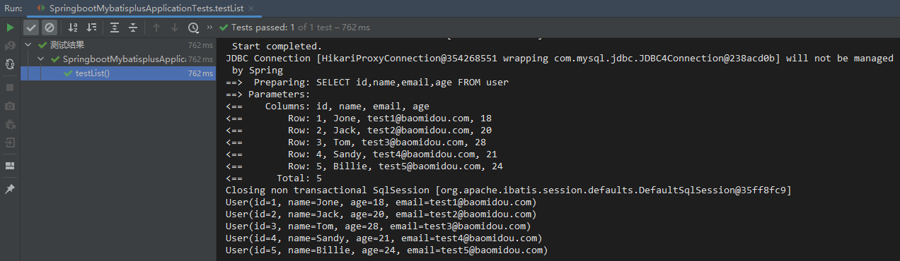
一、主键生成策略 1、简介 MybatisPlus在3.3.0版本后的主键生成策略如下：
AUTO：数据库ID自增
NONE：无状态，该类型为未设置主键类型
INPUT：手动设置ID
ASSIGN_ID：使用雪花算法 分配ID (主键类型为number或string）
ASSIGN_UUID：分配UUID (主键类型为 string)
2、使用须知 雪花算法不在此详解，需要注意的是生成后的数字有19位，Integer的最大值2^31-1仅10位，数据库的int最大也只有11位，所以要使用Long来储存。
在主键位数不足19位时，默认不会使用雪花算法，而是NONE，即不进行处理；设置AUTO时需要对应数据库字段为自增，INPUT则是插入时手动设置。
要使用雪花算法，数据库的字段类型长度大于19位，并且实体类对应字段为Long类型（注意是Long不是long，long类型默认值为 0，而 mybatisplus 只会判断是否为 null ）
2、示例 测试代码：
1 2 3 4 5 6 7 8 9 10 11 @Test public void testInsert () User user = new User(); user.setName("test" ); user.setAge(18 ); user.setEmail("testEmail" ); int i = userDao.insert(user); System.out.println(i); System.out.println(user); }
输出结果：
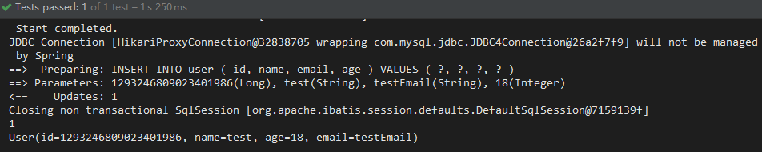
如果要手动设置生成策略，可以在相关字段上使用注解
1 2 3 4 5 6 7 8 @Data public class User @TableId (type = IdType.ASSIGN_ID) private Long id; private String name; private Integer age; private String email; }
二、使用自动填充 1、简介 实际项目中，需要使用一些值来记录数据的操作，例如创建时间、修改时间等等。可以在代码中使用new Date()或者System.currentTimeMillis()，但是这种方式是比较Low的，而且效率也不高。此时可以使用MybatisPlus的自动填充功能，填充策略有以下四种：
DEFAULT：默认，不进行处理
INSERT：插入时填充
UPDATE：更新时填充
INSERT_UPDATE：插入和更新时都进行填充
2、示例 首先在数据库新增两个字段，类型均为binint（直接储存时间戳，使用时转换格式。13位为毫秒级时间戳）
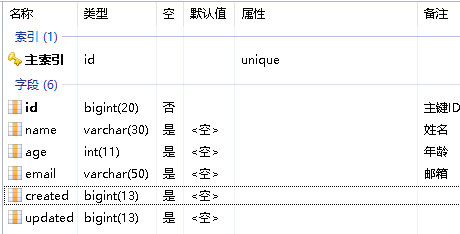
同时实体类也增加相应字段，并且使用注解@TableField表明填充策略
1 2 3 4 5 6 7 8 9 10 11 12 @Data public class User private Long id; private String name; private Integer age; private String email; @TableField (fill = FieldFill.INSERT) private Long created; @TableField (fill = FieldFill.INSERT_UPDATE) private Long updated; }
然后配置一下元对象数据处理器
1 2 3 4 5 6 7 8 9 10 11 12 13 14 15 @Component public class MyMetaObjectHandler implements MetaObjectHandler @Override public void insertFill (MetaObject metaObject) Long now = SystemClock.now(); this .setFieldValByName("created" , now, metaObject); this .setFieldValByName("updated" , now, metaObject); } @Override public void updateFill (MetaObject metaObject) Long now = SystemClock.now(); this .setFieldValByName("updated" , now, metaObject); } }
注：SystemClock是MybatisPlus的工具类，这是对于高并发场景下System.currentTimeMillis()的性能问题的优化实现
插入测试：
更新测试：
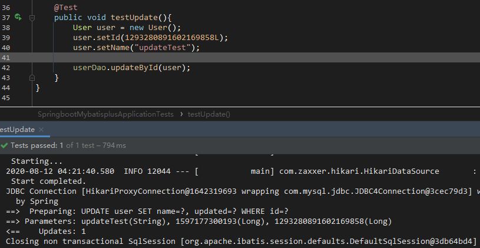
可以看到对应的填充策略成功生效了
三、乐观锁 1、配置 按照官网实现方式 的说明，先在数据库的表中增加一列version字段
列名不是固定的，但支持的数据类型只有:int,Integer,long,Long,Date,Timestamp,LocalDateTime
1 alter table user add version int (11 ) not null ;
实体类中也增加相应的字段并添加@Version注解
1 2 @Version private Integer version;
然后新建一个配置类，把OptimisticLockerInterceptor作为Bean注入进来
1 2 3 4 5 6 7 @Configuration public class MybatisPlusConfig @Bean public OptimisticLockerInterceptor optimisticLockerInterceptor () return new OptimisticLockerInterceptor(); } }
2、使用演示 更新成功的乐观锁：
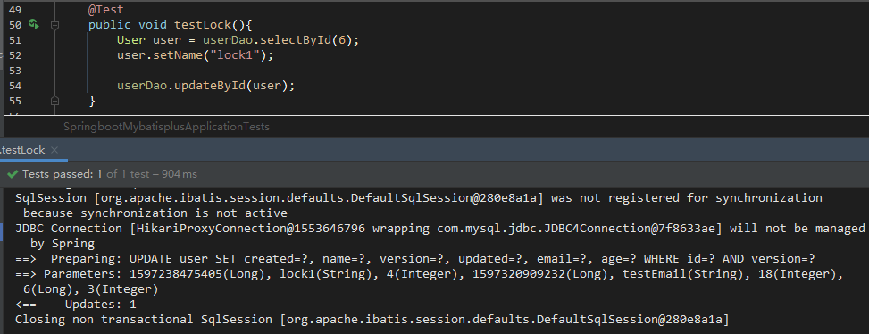
模拟更新失败的乐观锁：
在user对象更新前user2对象抢先执行了更新（同一条数据），那么user更新的数据就不会执行
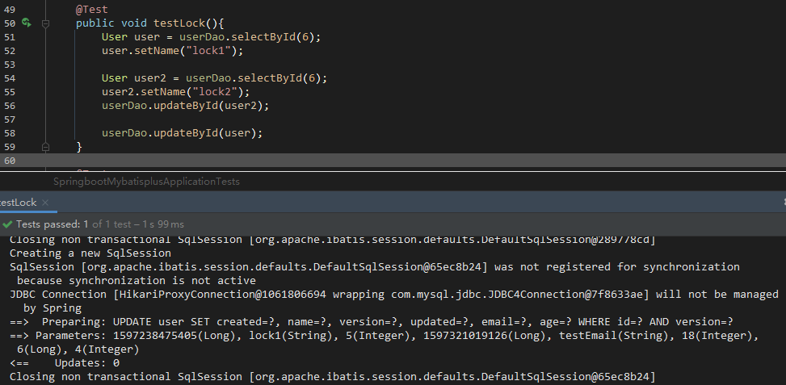
注意这里是先查询了数据再执行更新，如果手动new一个对象去设置id，那么乐观锁是不会生效的
四、分页查询 在上述配置类MybatisPlusConfig中增加一个Bean即可，可以给PaginationInterceptor类增加一些设定。以下是最简示例
1 2 3 4 @Bean public PaginationInterceptor paginationInterceptor () return new PaginationInterceptor(); }
使用：
1 2 3 4 Page<User> page = new Page<>(1 , 2 ); userDao.selectPage(page, null ); page.getRecords().forEach(System.out::println);
Page对象的构造参数分别为当前页（基1）和每页显示条数
五、逻辑删除 逻辑删除 ：与物理删除相对应，即使用一个删除标记来判断是否删除，实际并未删除
1、配置 首先增加一列字段
1 alter table user add deleted int (1 ) default 0 not null ;
实体类也增加相应的字段，同时使用注解标记为表字段逻辑处理（逻辑删除）
1 2 @TableLogic private Integer deleted;
可以在配置文件中设置逻辑删除值和未删除值（1和0是默认值，可以不设置）
1 2 mybatis-plus.global-config.db-config.logic-delete-value =1 mybatis-plus.global-config.db-config.logic-not-delete-value =0
2、演示 删除演示：
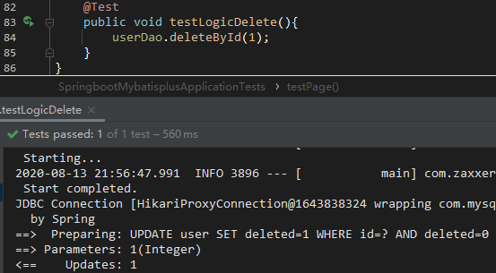
查询时也不会看到标记为删除的数据
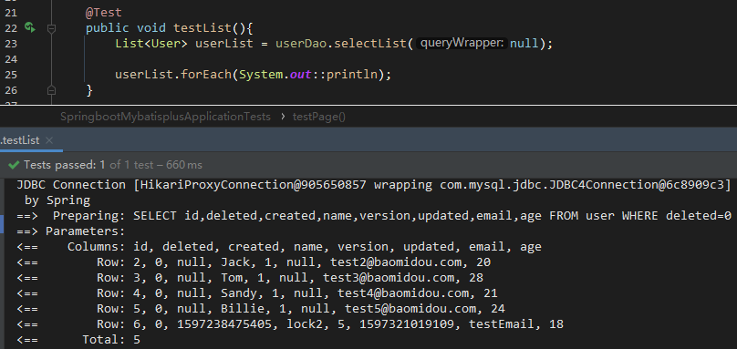
六、SQL性能分析 3.1.0版本开始，MP推荐使用p6spy 来执行SQL分析打印 。原来自带的分析插件在3.2.0被移除了
导入依赖：
1 2 3 4 5 <dependency > <groupId > p6spy</groupId > <artifactId > p6spy</artifactId > <version > 3.9.1</version > </dependency >
因为使用这个组件会有性能损耗，不建议生产环境使用，所以可以使用多环境配置文件来进行配置
1 spring.profiles.active =dev
然后在application-dev.properties文件中更改下面两个选项
1 2 spring.datasource.driver-class-name =com.p6spy.engine.spy.P6SpyDriver spring.datasource.url =jdbc:p6spy:mysql://localhost:3306/test?useSSL=false
新建一个spy.properties文件，内容参考MP官网说明或者p6spy的文档，需要注意的：
driverlist指定实际驱动logMessageFormat除了可以使用MP实现的日志打印格式，还有com.p6spy.engine.spy.appender包下的MultiLineFormat、CustomLineFormat、SingleLineFormat
运行示例：
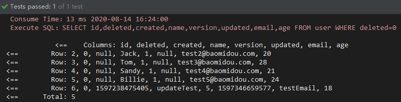
七、条件构造器 条件构造器 可以用于条件查询，能够执行一些比较复杂的SQL语句
AbstractWrapper为条件查询的抽象封装类，实际使用的是其子类QueryWrapper和UpdateWrapper
1、部分示例 查询age大于20的数据，按顺序排列 1 2 3 4 5 6 7 @Test public void testList () QueryWrapper<User> wrapper = new QueryWrapper<>(); wrapper.gt("age" , 20 ).orderByAsc("age" ); userDao.selectList(wrapper).forEach(System.out::println); }
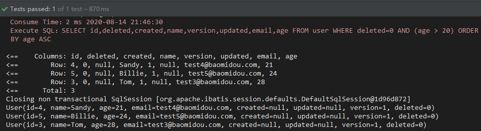
查询id在2和4（包括2和4）之间，并且name中含有a的模糊查询 1 2 3 4 5 6 7 @Test public void testList2 () QueryWrapper<User> wrapper = new QueryWrapper<>(); wrapper.between("id" , 2 , 4 ).like("name" ,"a" ); userDao.selectList(wrapper).forEach(System.out::println); }
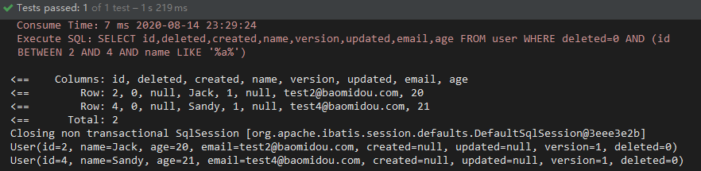
子查询+选择部分字段 1 2 3 4 5 6 7 @Test public void testList3 () QueryWrapper<User> wrapper = new QueryWrapper<>(); wrapper.select("name" , "email" , "age" ).inSql("name" , "select name from user where id < 3" ); userDao.selectList(wrapper).forEach(System.out::println); }
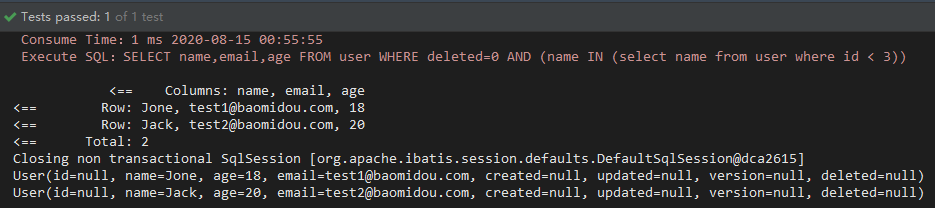
八、代码生成器 1、简介
AutoGenerator 是 MyBatis-Plus 的代码生成器，通过 AutoGenerator 可以快速生成 Entity、Mapper、Mapper XML、Service、Controller 等各个模块的代码，极大的提升了开发效率。
使用介绍：https://baomidou.com/guide/generator.html
详细配置：https://baomidou.com/config/generator-config.html
2、示例 2.1 导入依赖
MyBatis-Plus 从 3.0.3 之后移除了代码生成器与模板引擎的默认依赖，需要手动添加相关依赖
1 2 3 4 5 6 7 8 9 10 <dependency > <groupId > com.baomidou</groupId > <artifactId > mybatis-plus-generator</artifactId > <version > 3.3.2</version > </dependency > <dependency > <groupId > org.apache.velocity</groupId > <artifactId > velocity-engine-core</artifactId > <version > 2.2</version > </dependency >
2.2 编写配置 1 2 3 4 5 6 7 8 9 10 11 12 13 14 15 16 17 18 19 20 21 22 23 24 25 26 27 28 29 30 31 32 33 34 35 36 37 38 39 40 41 42 43 44 45 46 47 48 49 50 51 52 53 54 55 56 57 58 59 60 61 62 63 64 65 66 67 68 69 70 71 72 73 74 75 76 77 78 public class CodeGenerator private static final String PROJECT_PATH = System.getProperty("user.dir" ); private static final String SRC_MAIN_JAVA = "/src/main/java" ; private static final String AUTHOR = "VoidSoul" ; private static final String DB_DRIVER_NAME = "com.mysql.jdbc.Driver" ; private static final String DB_URL = "jdbc:mysql://localhost:3306/test?useSSL=false" ; private static final String DB_USERNAME = "root" ; private static final String DB_PASSWORD = "root" ; private static final String PACKAGE_PARENT = "com.example" ; private static final String MODULE_NAME = "test" ; public static void main (String[] args) GlobalConfig gc = new GlobalConfig(); gc.setOutputDir(PROJECT_PATH + SRC_MAIN_JAVA); gc.setAuthor(AUTHOR).setIdType(IdType.AUTO); gc.setOpen(false ).setFileOverride(false ) .setEnableCache(false ).setKotlin(false ).setSwagger2(false ); gc.setEntityName("%s" ).setMapperName("%sDao" ) .setServiceName("%sService" ).setServiceImplName("%sServiceImpl" ); DataSourceConfig dsc = new DataSourceConfig(); dsc.setDriverName(DB_DRIVER_NAME).setUrl(DB_URL); dsc.setUsername(DB_USERNAME).setPassword(DB_PASSWORD); StrategyConfig sc = new StrategyConfig(); sc.setNaming(NamingStrategy.underline_to_camel); sc.setColumnNaming(NamingStrategy.underline_to_camel); sc.setEntityLombokModel(true ); sc.setInclude("user" ); sc.setVersionFieldName("version" ); sc.setLogicDeleteFieldName("deleted" ); TableFill created = new TableFill("created" , FieldFill.INSERT); TableFill updated = new TableFill("updated" , FieldFill.INSERT_UPDATE); sc.setTableFillList(Arrays.asList(created, updated)); PackageConfig pc = new PackageConfig(); pc.setParent(PACKAGE_PARENT).setModuleName(MODULE_NAME); pc.setEntity("entity" ).setMapper("dao" ); pc.setService("service" ).setServiceImpl("service.impl" ); TemplateConfig tc = new TemplateConfig(); tc.disable(TemplateType.XML, TemplateType.CONTROLLER); InjectionConfig cfg = new InjectionConfig() { @Override public void initMap () } }; FileOutConfig foc = new FileOutConfig("/templates/mapper.xml.vm" ) { @Override public String outputFile (TableInfo tableInfo) return PROJECT_PATH + "/src/main/resources/mappers/" + tableInfo.getEntityName() + "Mapper" + StringPool.DOT_XML; } }; cfg.setFileOutConfigList(Collections.singletonList(foc)); AutoGenerator mpg = new AutoGenerator(); mpg.setGlobalConfig(gc); mpg.setDataSource(dsc); mpg.setStrategy(sc); mpg.setPackageInfo(pc); mpg.setTemplate(tc); mpg.setCfg(cfg); mpg.execute(); } }
执行以上配置将在当前工程的com.example.test包下根据user表创建entity、dao和service包并生成相应文件（在模版配置里禁用了生成controller），在resources下创建mappers包并生成xml文件。
需要注意的：
必须导入模版引擎依赖，否则生成器无法执行
在官网详细配置或源码文档中可以找到所有的设置，非常多
基本上所有的setXXX方法都支持链式调用
自定义配置在输出文件时会被优先执行
配置的数据源仅用于生成器连接数据库访问数据表
没有使用set的配置（包括配置对象自身），会使用默认的配置